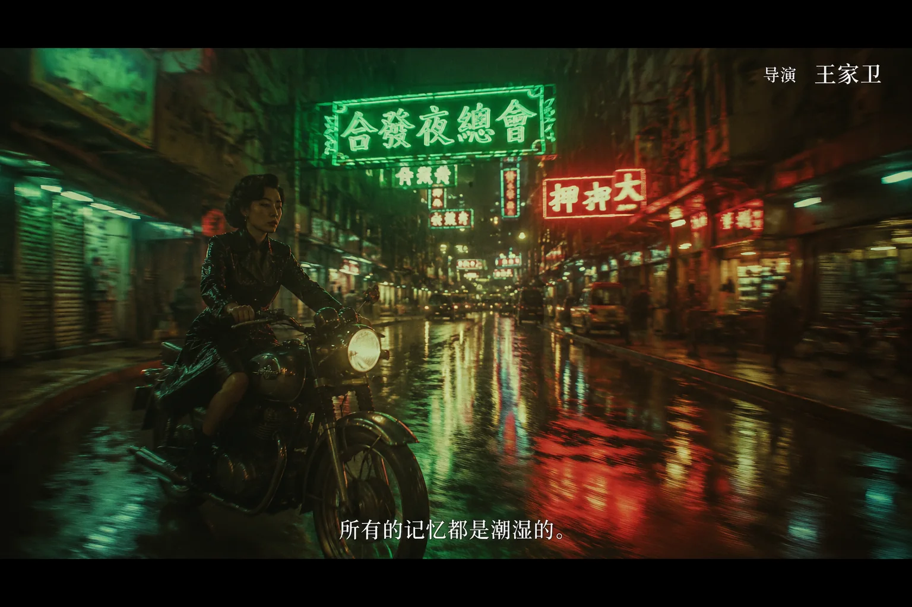

01
张艺谋Zhang Yimou
女人骑着黑色摩托车穿过古城街道，浓烈红色灯笼与金黄色墙面，强对比色彩，大面积留白，庄重对称构图，尘土飞扬，史诗感，电影级光影，高清细节
一个克制的电影院式画廊：女人、摩托、城市光线，以及 50 位导演启发下的世界电影语法。

点击任意画面查看完整大图。PC 可用键盘 ← / → 或按钮翻页；移动端可左右滑动翻页。
女人骑着黑色摩托车穿过古城街道，浓烈红色灯笼与金黄色墙面，强对比色彩，大面积留白，庄重对称构图，尘土飞扬，史诗感，电影级光影，高清细节
女人骑着复古摩托车穿过雨夜香港街道，霓虹灯反射在湿润路面，慢门拖影，绿色与红色霓虹交错，孤独浪漫氛围，窄巷构图，胶片颗粒，电影截图感
女人骑摩托车穿过安静街道，城市与自然边界交融，克制情绪，柔和自然光，细腻人物表情，真实生活质感，优雅构图，温柔电影摄影
女人骑着摩托车穿过旧北京街道，戏剧化光影，传统建筑与现代交通工具对比，人物带有命运感，宽银幕构图，厚重色彩，历史与现实交错，电影级画面
女人骑摩托车穿过中国小城街道，灰蓝天空，旧广告牌，水泥楼房，真实纪实感，冷静长镜头构图，普通街景中的孤独人物，低饱和色彩，社会现实主义摄影
女人骑摩托车缓慢穿过老街，远景固定机位，柔和自然光，生活化街边摊与斑驳墙面，人物被环境包围，安静克制，诗意现实主义，胶片质感
女人骑摩托车穿过台北现代街道，都市秩序感，玻璃建筑与复杂路口，冷静构图，人物显得疏离，淡雅色彩，理性而孤独的城市电影感
女人骑摩托车穿过夜晚街道，硬朗黑色皮衣，冷蓝路灯，强烈明暗对比，街角暗处有紧张感，精准几何构图，香港犯罪片氛围，锐利电影光影
女人骑摩托车冲过充满风沙和霓虹的街道，夸张动势，广角镜头，衣摆飞扬，现代武侠感，强烈色彩，戏剧化烟雾，速度感，奇幻动作电影画面
女人骑摩托车穿过夜色街道，柔美灯光，复古服装，情绪化面部特写，怀旧都市氛围，细腻女性视角，淡淡忧伤，暖色胶片质感，优雅电影摄影
女人骑摩托车穿过烈日下的街道，强烈阳光，高饱和暖色，夸张透视，荒诞幽默气质，人物自信张扬，尘土与红墙，粗粝而有力量的电影画面
女人骑摩托车穿过潮湿夜晚的山城街道，梦境般长镜头感，绿色霓虹，烟雾，楼梯与隧道交错，现实与幻觉模糊，诗意迷离，低照度电影摄影
女人骑摩托车穿过拥挤潮湿的城市街道，手持摄影感，失焦灯光，人物情绪强烈，混乱而亲密的都市空间，低饱和色彩，真实而躁动的电影画面
女人骑摩托车穿过古老城门街道，传统武侠构图，飞扬尘土，远山与屋檐剪影，人物姿态英气，古典东方美学与现代摩托车融合，庄严宽银幕画面
女人骑摩托车穿过空旷潮湿街道，几乎没有行人，静止长镜头感，水渍地面，孤独人物，冷色调，城市荒凉感，极简构图，沉默电影氛围
女人骑摩托车高速穿过枪战后的街道，白鸽掠过，慢动作，风衣飞扬，火光与烟雾，英雄主义姿态，强烈逆光，动作片电影级构图
女人骑摩托车穿过普通社区街道，温和自然光，真实市井生活，街边老人和小店，人物平静而坚韧，生活质感强，柔和写实电影摄影
女人骑摩托车穿过热闹城市街道，现实生活喜剧氛围，街边广告牌，人群表情丰富，暖色自然光，轻微荒诞感，现代都市电影画面
女人骑摩托车穿过混乱街道，夸张广角，路边摊、广告牌、车辆拥堵，黑色幽默感，强烈动势，饱和色彩，市井犯罪喜剧电影风格
女人骑摩托车穿过辽阔边地街道，远山、风沙、空旷道路，人物渺小而坚定，自然光，民族与土地气息，沉静宽银幕构图，史诗现实主义
女人骑摩托车穿过极度对称的城市街道，中央透视构图，冷峻几何空间，干净白色建筑，强控制感，神秘疏离氛围，精密电影摄影
女人骑摩托车穿过安静街道，背后建筑窗户暗藏窥视感，悬疑气氛，优雅但紧张的构图，阴影斜切路面，经典惊悚电影光影
女人骑摩托车穿过狂风暴雨中的街道，强烈天气元素，黑白高对比，尘土与雨水飞溅，人物姿态坚毅，武士片般的史诗动势，宽银幕构图
女人骑摩托车穿过梦幻般的夜间街道，夸张人物、马戏团式灯光、喷泉与古典建筑，荒诞又华丽，超现实都市游行感，黑白胶片质感
女人骑摩托车穿过积水街道，雾气、废墟、湿润地面反光，时间缓慢流动，诗意孤独，低饱和自然光，冥想式电影画面
女人骑摩托车穿过纽约夜街，红色尾灯、黄色出租车、湿润柏油路，强烈都市能量，动态跟拍感，犯罪片张力，霓虹与阴影交错
女人骑摩托车穿过昏黄街道，深色阴影，古典构图，家族史诗般厚重气氛，暖色路灯，人物神情冷静，庄重电影质感
女人骑摩托车穿过街道，夕阳逆光，镜头带有冒险感，街边孩子回头注视，温暖金色光线，充满奇遇与希望，经典好莱坞电影画面
女人骑摩托车穿过未来雨夜街道，巨大广告屏、蓝绿色霓虹、烟雾、工业建筑，赛博朋克氛围，强烈背光，硬核科幻电影质感
女人骑摩托车穿过阴暗城市街道，冷绿色调，潮湿混凝土，精密构图，低调光，悬疑与危险感，锐利数字电影摄影，暗黑现代都市
女人骑摩托车穿过阳光街道，复古服装，强烈黄色与红色，低机位仰拍，酷感十足，暴力美学暗示，70年代电影海报感
女人骑摩托车穿过巨大城市街道，高楼形成压迫透视，冷蓝灰色调，IMAX 宽银幕感，现实主义动作场面，强烈速度与命运感
女人骑摩托车穿过粉彩色街道，完全对称构图，复古招牌，整齐建筑立面，人物正面居中，柔和色彩，精致模型感，幽默童话电影画面
女人骑摩托车穿过哥特式街道，扭曲建筑、黑白条纹、紫色夜空，怪诞浪漫气质，苍白月光，奇异但优雅，暗黑童话电影感
女人骑摩托车穿过阳光街道，风吹动头发与衣摆，街边绿植、蓝天白云、温暖小镇，机械与自然和谐共存，清新手绘动画质感
女人骑摩托车穿过现实与幻觉重叠的街道，广告牌突然变形，镜面反射出现另一个空间，强烈心理感，都市超现实构图，锐利动画电影画面
女人骑摩托车穿过精致冷艳的街道，深红与墨绿色色调，优雅复仇氛围，构图极端讲究，奢华室外灯光，危险而美丽的电影感
女人骑摩托车穿过阶层分明的城市街道，一侧是豪宅区一侧是地下街，雨后路面，黑色幽默与社会寓言感，精准构图，冷暖对照
女人骑摩托车穿过空旷河边街道，极简空间，冷风，水面反光，人物沉默孤独，象征性构图，低饱和色彩，静谧而压抑的电影画面
女人骑摩托车穿过马德里街道，鲜艳红色、蓝色和黄色墙面，强烈女性气质，戏剧化情绪，时尚服装，明亮饱和色彩，热烈电影画面
女人骑摩托车穿过神秘夜街，古老建筑、湿润石板路、金色与蓝绿色灯光，奇幻生物暗影若隐若现，童话与恐怖融合，华丽细节
女人骑摩托车穿过巴黎街道，跳切感构图，红蓝白强色块，新浪潮街拍感，随性叛逆，手持摄影，胶片颗粒，现代主义电影画面
女人骑摩托车穿过浪漫街道，柔和黑白胶片，路边咖啡馆，青春与自由感，轻盈自然的摄影，人物带着即兴情绪，法国新浪潮氛围
女人骑摩托车穿过海边小镇街道，温柔纪实感，鲜活色彩，普通人的目光，诗意女性视角，街边花店与海风，亲密而自由的电影画面
女人骑摩托车穿过现代主义空旷街道，巨大建筑立面，人物孤独而渺小，冷静构图，低饱和色彩，存在主义疏离感，静默电影画面
女人骑摩托车穿过荒凉尘土街道，极端远景与眼部特写感，夕阳逆光，风沙飞扬，西部片张力，孤胆骑士气质，宽银幕电影构图
女人骑摩托车穿过树影斑驳的街道，黄金时刻自然光，镜头贴近风、光与皮肤，诗意旁白感，柔和广角，生命感与自由感，梦幻写实
女人骑摩托车穿过巨大沉默的未来街道，雾霾天空，极简建筑，橙灰色调，宏大尺度，孤独人物，压迫感科幻氛围，冷峻电影摄影
女人骑摩托车穿过霓虹街道，极端红紫灯光，旋转镜头感，强烈眩晕效果，夜店外墙与湿润路面，刺激、不安、迷幻的电影画面
女人骑摩托车穿过明亮街道，温暖日光，粉色与蓝色城市色彩，青春、自由与自我表达，轻盈构图，现代女性成长电影氛围，清爽高清细节